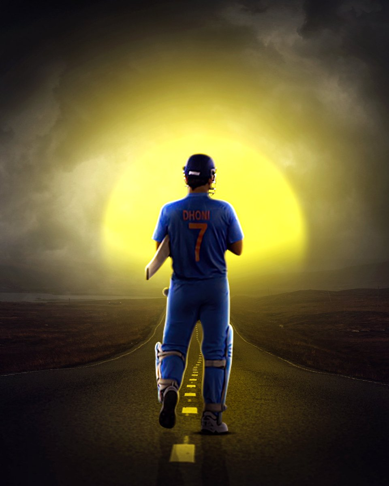

Achievements
- 2007- T20 WORLD CUP
- 2008- CB SERIES
- 2009- TEST CHAMPIONSHIP
- 2010- ASIA CUP
- 2010- IPL TROPHY
- 2010- CHAMPIONS LEAGUE T20
- 2011- IPL TROPHY
- 2011- WORLD CUP
- 2013- CHAMPIONS TROPHY
- 2014- CHAMPIONS LEAGUE T20
- 2016- ASIA CUP
- 2018- IPL TROPHY
- 2021- IPL TROPHY

Awards
- In 2006, he received the title of MTV Youth Icon of the Year.
- For 2007-2008, he received India's highest honour given for achievement in sports-- Rajiv Gandhi Khel Ratna.
- In 2008, 2009, he was awarded the ICC ODI Player of the Year.
- In 2009, he received India's fourth-highest civilian award-- Padma Shri.
- In 2009, 2010 and 2013; he was awarded the ICC World Test XI.
- In 2011, he was awarded Castrol Indian Cricketer of the Year.
- In August 2011, he received an honorary doctorate from De Montfort University.
- In 2013, he received the LG People's Choice Award.
- ICC World ODI XI: 2006, 2008, 2009, 2010, 2011, 2012, 2013, 2014 (captain in 2009,2011-2014).
- In 2018, he received India's third-highest civilian award-- Padma Bhushan.
- ICC Spirit of the cricket award of the decade: 2011-2020.
- ICC Men's ODI team and T20 team of the decade: 2011-2020(captain and wicketkeeper).